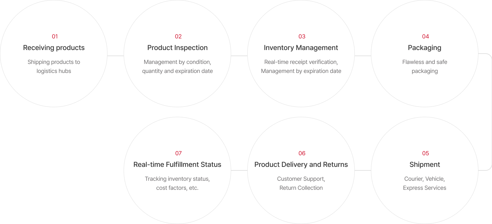

-
Order Processing and Fulfillment Services
transcosmos Korea specializes in optimizing order processing, fulfillment, and inventory management through advanced automation services, supporting businesses to streamline their logistics, sales, order processing, dispatching, inventory management, and cost reductions.
![01 Client request and contractualization(Discussing with clients and signing contracts) 02 Product Receipt(Receiving products developed or manufactured by the client) 03 Storage(Storing products in a professional storage system warehouse) 04 Order Instruction(Compiling and transmitting order information) 05 Packing(Quick and appropriate product packing by professional packaging specialists) 06 Shipping and Notifying Results(Tracking shipments via a computerized system) 07 Inventory Management(Managing and monitoring inventory and preventing product defects)](../../assets/images/business_backoffice01.png)
![01 Client request and contractualization(Discussing with clients and signing contracts) 02 Product Receipt(Receiving products developed or manufactured by the client) 03 Storage(Storing products in a professional storage system warehouse) 04 Order Instruction(Compiling and transmitting order information) 05 Packing(Quick and appropriate product packing by professional packaging specialists) 06 Shipping and Notifying Results(Tracking shipments via a computerized system) 07 Inventory Management(Managing and monitoring inventory and preventing product defects)](../../assets/images/m_business_backoffice01.png)
-
Content Monitoring Services
In the era of live commerce, transcosmos Korea enhances business focus by taking on non-core tasks for clients operating in the expanding market of video platforms and e-commerce. We provide meticulous pre- and post-monitoring of various content types, such as social media videos, product information, online bulletin boards, product reviews, and advertisements, ensuring their appropriateness and integrity. Furthermore, we offer preventative measures against fraudulent transactions and document verification through systems such as Anti-money Laundering (AML) and the Fraud Detection System (FDS).
-
Security Monitoring and Management
transcosmos Korea offers comprehensive and systematic facility management services, including establishing and supporting the operational workforce supply system for round-the-clock security, access control, and facility security, as well as providing customized on-site training for field agents.
- Data Collection
- Monitoring and Analysis
- Response/Measures
- Reporting
- Security Equipment, Network, System
- Infringement analysis for ESM alerts(Security equipment log analysis, / Web logs & web firewall logs analysis, / Hacking pattern analysis)
- Blocking IP used for intrusion, Failure registration, Event registration, Response instructions
- Reporting/History Management(Intrusion incident handling results, Failure resolution results, System information)
- Incident response results
- Notification to related departments
- transcosmos Korea
- Monitoring Agents(A vulnerability list, Security technology documents, Website tampering monitoring, Report on the latest security trends, Detailed analysis)
- Security Officer(Response instructions, Identifying and preparing response measures)
- Incident response results
- Notification to related departments
-
Office Outsourcing Services
We assist corporations and organizations in boosting their operational efficiency by offering outsourced office services across a range of administrative functions, including HR, general affairs, accounting, document creation, and translation.
![01 Preparation Stage(Diagnosis of current management status) 02 Objective Setting(Specifying the objective targets, Defining the type, range, and standards of outsourcing) 03 Cost Evaluation(Development of improvement objectives based on the analysis of performance benchmarks and cost factors) 04 Contractual Discussion(Anticipation of potential obstacles, scenario formulation, and subsequent contractual agreements) 05 Launch of an Outsourcing Service(Transferring tasks and establishing communication channels) 06 Operational Management(Establishment of performance monitoring systems and evaluative frameworks)](../../assets/images/business_backoffice04.png)
![01 Preparation Stage(Diagnosis of current management status) 02 Objective Setting(Specifying the objective targets, Defining the type, range, and standards of outsourcing) 03 Cost Evaluation(Development of improvement objectives based on the analysis of performance benchmarks and cost factors) 04 Contractual Discussion(Anticipation of potential obstacles, scenario formulation, and subsequent contractual agreements) 05 Launch of an Outsourcing Service(Transferring tasks and establishing communication channels) 06 Operational Management(Establishment of performance monitoring systems and evaluative frameworks)](../../assets/images/m_business_backoffice04.png)
-
Fulfillment and Warehousing Services
transcosmos Korea provides logistics operation services to clients seeking optimization of management practices, on-site personnel management, and efficient operations. We offer outsourced logistics services, such as fulfillment and returns, with enhanced quality through consignments to professional logistics companies.
-
Real Estate Verification Services
To prevent consumer harm from fraudulent real estate advertisements, transcosmos Korea verifies the authenticity and transaction feasibility of property listings, contributing to the creation of a safe real estate market.
-
Headhunting Services for Back-office Positions
transcosmos Korea streamlines HR operations by conducting all aspects of recruitment, from job posting to talent scouting and interviews, catering to clients seeking efficiency in recruitment processes or cost reduction and those desiring a diversified talent pool.
Facilitating efficient operations through
Back-office
We support the efficient operations of our clients by providing
comprehensive support for a multitude of necessary back-office tasks.
Back-office
transcosmos Korea provides specialized outsourcing services to perform the entire spectrum of business operations, supporting the clients to focus on the processes that are conducted within their companies and enhance the competitiveness of their core tasks.

Primary Services
transcosmos Korea is at the forefront of offering various innovative digital services.
Distinct Features
transcosmos Korea holds extensive industry expertise as well as cutting-edge technical capabilities.
-
Implementation of Automation Systems
By implementing automation systems in
business procedures, we help our clients
save time while maintaining the
accuracy and integrity of the work
process. -
Efficient Work Management
We help our clients raise employee
satisfaction on repetitive and routine
tasks and create an environment in
which their employees can better focus
on developing their job skills. -
Customer Complaint Reduction
By refining the workflow to eliminate
unnecessary procedures, we elevate
customer satisfaction and effectively
prevent customer complaints.